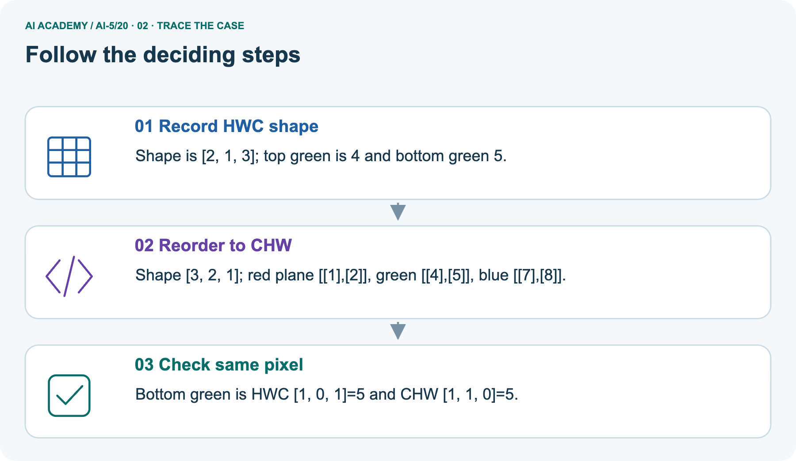
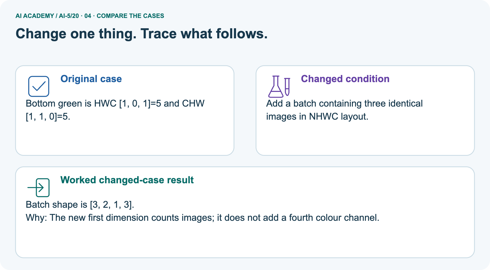
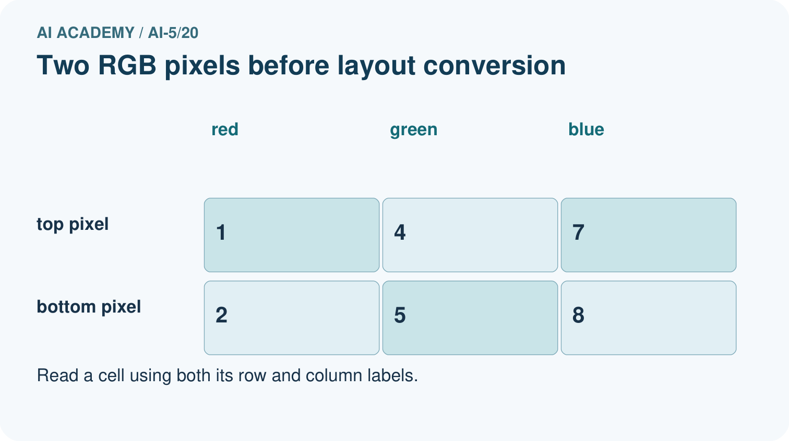
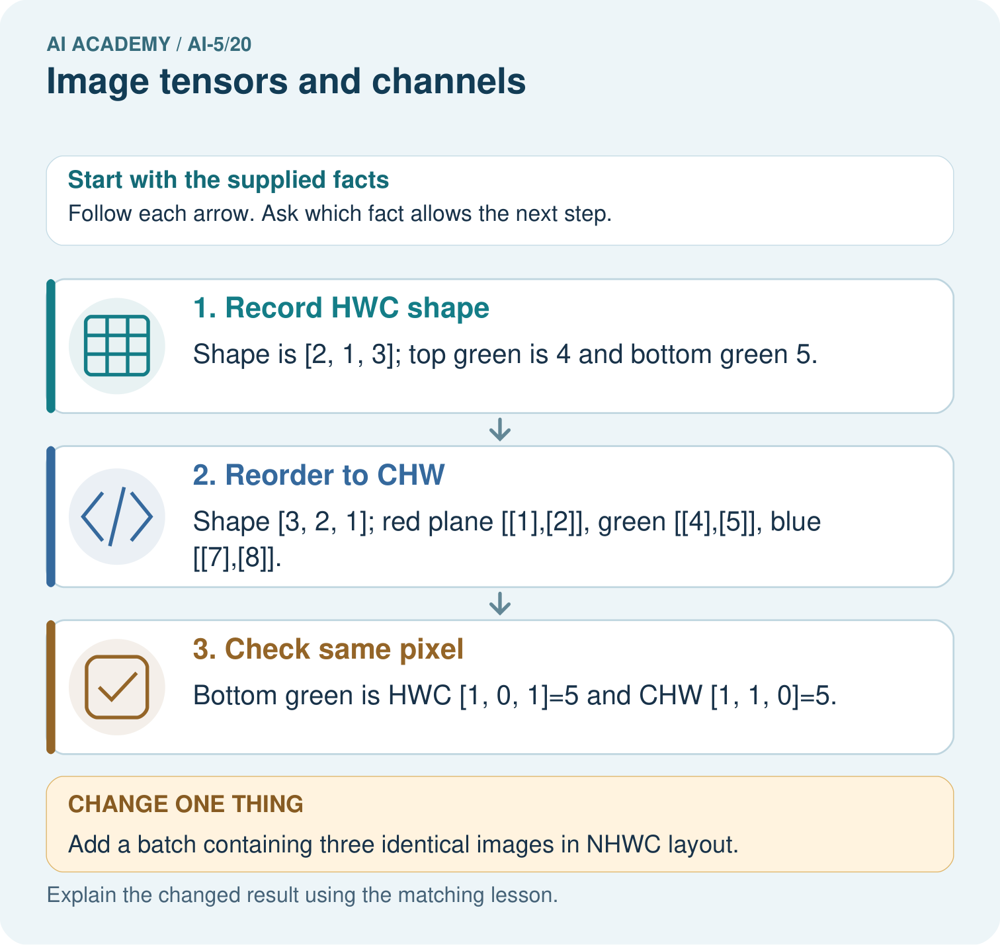
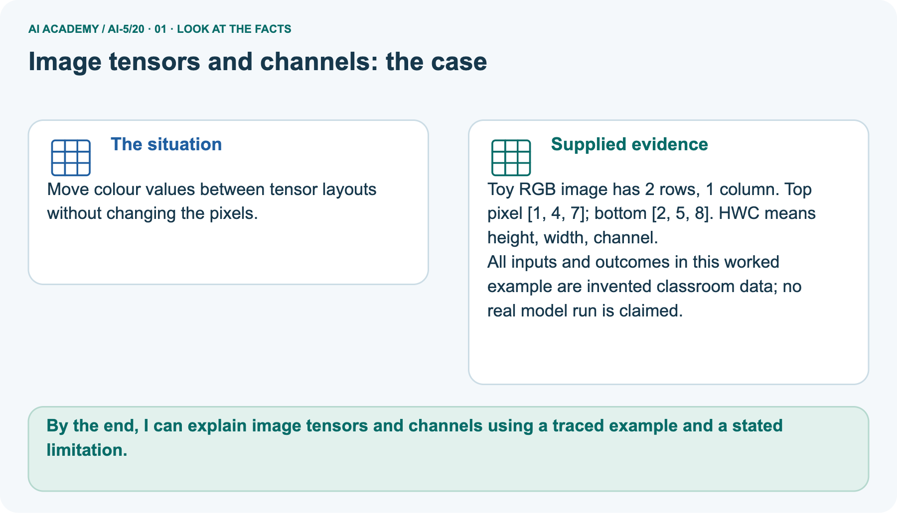
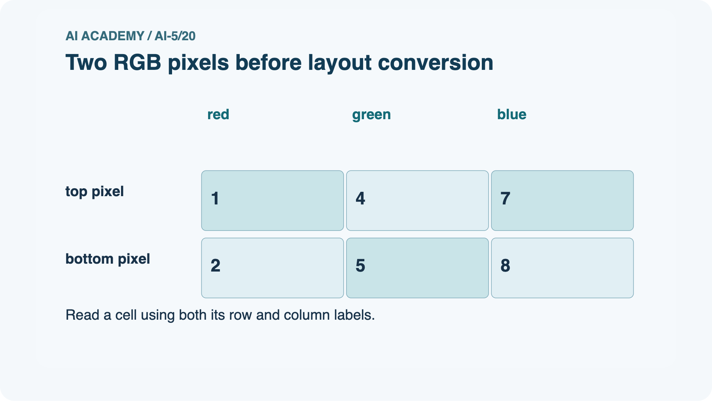
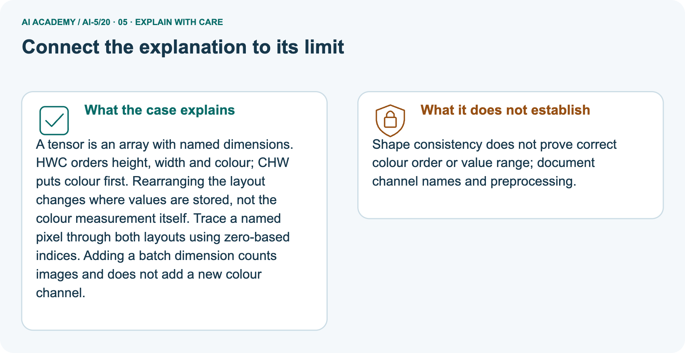

AI Academy · Level 5 · Grade 10 · Week 20 · Student lesson
Image tensors and channels
Learn to understand, design, build, test and explain AI systems responsibly.
Project: Image-pattern Network Investigation
THE CONNECTED WEEK
Name the axes. Track the pixel. Check the values.
Convert image layouts while preserving channel meaning and distinguishing scaling from information loss.
Keep one habit: Complete RGB pixels → labelled channel-plane diagram → known-value round trip → pictured batch axis → scaling audit → independent new image.
Main lesson · Section 1
Can you find the same colour measurement after the axes move?
Name row,column,channel and batch positions before reading values.
Learning goals
I can read a pixel using declared row column and channel axes.
I can convert channel layout without changing pixel meaning.
I can distinguish fixed value scaling from information losing transformations.
Retrieve preserved and lost information
Close your notes first. A rough first answer helps us choose the right starting point; it is not a score for your ability.
Without opening the old lesson, explain one key idea from Learned representations. Give an example and a mistake that the idea helps you avoid.
Without opening the old lesson, explain one key idea from Initialisation and reproducibility. Give an example and a mistake that the idea helps you avoid.
Without opening the old lesson, explain one key idea from Learning rate experiments. Give an example and a mistake that the idea helps you avoid.
After trying, check the relevant lesson or ask your teacher. Change the part of your explanation that the evidence shows was wrong.
Prerequisite and starting response
Why does a representation with two components not necessarily preserve two original measurements?
End goal
By the end, I can explain image tensors and channels using a traced example and a stated limitation.
Earlier wording, alternatives and picture transcripts
Your learning target
Remember before reading
This week you will practise:
Read a pixel using declared row column and channel axes
Convert channel layout without changing pixel meaning
Distinguish fixed value scaling from information losing transformations
Retrieve what you already know
This week’s end goal
Main lesson · Section 2
One pixel contains three ordered colour values
This image has four pixels and twelve stored channel values.
Complete RGB/zero-based axis contract
A small fictional RGB image has height 2 pixels, width 2 pixels and three channels ordered red, green, blue. Store it as image[row][column][channel], abbreviated HWC.
Use zero-based indices: the top row is 0, the left column is 0, and red, green and blue are channels 0, 1 and 2. Each stored component is an integer from 0 to 255.
Every pixel and colour triplet
| Position | RGB triplet | Meaning |
|---|---|---|
| Row 0 column 0 | [255, 0, 0] | Red |
| Row 0 column 1 | [0, 255, 0] | Green |
| Row 1 column 0 | [0, 0, 255] | Blue |
| Row 1 column 1 | [255, 255, 255] | White |
Shape,channel meaning and other formats
The shape is 2 by 2 by 3. There are four pixels and twelve channel values. The blue component of the bottom-left pixel is image[1][0][2] = 255.
A single channel is a plane of values across positions; it is not a separate photograph or a label.
Shape needs a schema. A grayscale image might be stored as H by W or H by W by 1. An RGB image uses three channels here; other formats can include additional channels.
Declare the format instead of assuming every three-dimensional array means the same thing.
Name supplied and missing facts
Main lesson · Section 3
Trace pixels into planes and back
A preserved value needs its row,column and channel labels in both layouts.
Complete axis-conversion definition
A channel-first layout uses image[channel][row][column], abbreviated CHW. Our image then has shape 3 by 2 by 2. A correct conversion preserves the rule chw[c][r][k] = hwc[r][k][c].
The code assumes a nonempty rectangular image with exactly three values per pixel.
Labelled RGB image and all three planes

Complete numeric planes and same-value indices
| CHW channel index / name | Row0 values(column 0 then1) | Row1 values(column 0 then1) |
|---|---|---|
| 0 /red | [255, 0] | [0, 255] |
| 1 /green | [0, 255] | [0, 255] |
| 2 /blue | [0, 0] | [255, 255] |
| Same measurement | HWC index | CHW index | Preserved value |
|---|---|---|---|
| Top-right green | [0][1][1] | [1][0][1] | 255 |
| Bottom-left blue | [1][0][2] | [2][1][0] | 255 |
| Bottom-right red | [1][1][0] | [0][1][1] | 255 |
| Top-left blue | [0][0][2] | [2][0][0] | 0 |
Conversion versus regrouping and input assumptions
The complete converter assumes a nonempty rectangular image with exactly three valid raw channel values per pixel. It checks a known measurement and round-trip reconstruction for the supplied image, not every possible malformed file. CHW conversion reads the same value with a different axis order. Merely reshaping consecutive flattened values gives a wrong red plane even when dimensions look right.
Keep the RGB channel names, raw 0–255 range and traversal order with the shape.
Reading nested values in order and merely regrouping them into a new shape does not perform this axis conversion. The first four flattened HWC values are [255, 0, 0, 0].
A naive regrouping makes these the first channel plane, but the correct red plane is [[255, 0], [0, 255]]. Shape agreement alone cannot detect this mistake.
Complete runnable round-trip conversion
hwc = [
[[255, 0, 0], [0, 255, 0]],
[[0, 0, 255], [255, 255, 255]],
]
height, width = len(hwc), len(hwc[0])
chw = [[[hwc[r][k][c] for k in range(width)]
for r in range(height)] for c in range(3)]
for channel in chw:
print(channel)
assert chw[2][1][0] == hwc[1][0][2] == 255
restored = [[[chw[c][r][k] for c in range(3)]
for k in range(width)] for r in range(height)]
assert restored == hwcConnect each visual value to its named index
Point to the input, the deciding step and the result in this week’s visual. Explain the same step in ordinary words. A picture helps when you can say what each part represents.
Earlier wording, alternatives and picture transcripts
Connect the picture and the explanation
Main lesson · Section 4
Change layout without changing pixel meaning
A batch axis counts images;it does not add a colour channel.
Current flatten-versus-convert task
A program flattens the lesson HWC array and groups the first four values into a 2 by 2 red plane. Give that incorrect plane and the correct plane. Identify a position where they disagree.
Predict the pictured three-image batch
Change: Add a batch containing three identical images in NHWC layout.
Check after predicting
Prediction: Batch shape is [3, 2, 1, 3].
Reason: The new first dimension counts images; it does not add a fourth colour channel.
Earlier wording, alternatives and picture transcripts
Compare a familiar case with a changed case
Change one thing in the pictured case
Main lesson · Section 6
Track one named pixel through a layout and batch change
Keep the pictured height,width and batch count distinct.
Complete separate pixel facts and scope
Move colour values between tensor layouts without changing the pixels.
Toy RGB image has 2 rows, 1 column. Top pixel [1, 4, 7]; bottom [2, 5, 8]. HWC means height, width, channel.
All inputs and outcomes in this worked example are invented classroom data; no real model run is claimed.
The picture is a separate two-row, one-column RGB image:top[1, 4, 7], bottom[2, 5, 8]. HWC shape 2×1×3 becomes CHW3×2×1, with red[[1], [2]], green[[4], [5]], blue[[7], [8]]. Bottom green stays 5at HWC[1][0][1]and CHW[1][1][0]. Three such images in NHWC have shape 3×2×1×3; bottom green in the first image is batch[0][1][0][1].
These small values are raw classroom examples, not the main red/green/blue/white image’s255 values.
Trace the two layouts and bottom green



Read the picture one step at a time
A tensor is an array with named dimensions. HWC orders height, width and colour; CHW puts colour first. Rearranging the layout changes where values are stored, not the colour measurement itself.
Trace a named pixel through both layouts using zero-based indices. Adding a batch dimension counts images and does not add a new colour channel.
Predict the added three-image batch
Change one thing: Add a batch containing three identical images in NHWC layout. Predict the result before checking the explanation. What remains the same?
Check after predicting



Explain channel/schema limits and the batched index
Shape consistency does not prove correct colour order or value range; document channel names and preprocessing.
Read the labelled picture: Where is the bottom green pixel in the first batched image? Point to the relevant step in the picture, then write the changed result and the rule or evidence that supports it.
Reconstruct the main image’s right-hand pixels
The same pixels in three channel planes
Earlier wording, alternatives and picture transcripts
Learn from the worked case
Cover the result before checking it. Say what is given, choose the procedure, and follow one step at a time. Then uncover the result and explain your first mismatch. Ask why a step is allowed, not only what number it produces.
A pictorial worked case: Image tensors and channels
The facts we will use






Why this result follows
What this example does not establish
Main lesson · Section 7
Separate reordering,scaling and information loss
A fixed division does not estimate a training statistic;averaging colours changes the information.
Complete scaling,double-scaling and colour-mean explanation
For this lesson, divide every channel value by 255 to obtain floating-point values from 0 to 1. Thus [255, 128, 0] becomes [1, 128/255, 0], with the middle value approximately 0.502.
This fixed conversion does not fit a statistic from data. Apply the same conversion during training and later use, and record whether an input is already scaled.
Dividing twice makes a raw value of 255 become 1/255, approximately 0.00392, instead of 1. Integer rounding after scaling can also erase distinctions.
In exact arithmetic the declared division is reversible by multiplication; finite precision or deliberate rounding can limit exact recovery.
Averaging RGB channels is a different operation. The classroom mean gives red [255, 0, 0] and green [0, 255, 0] the same value 85, losing their colour distinction.
It is a simple illustration, not a perceptual brightness formula. If preprocessing instead estimates means or spreads from a dataset, fit those statistics using training data only.
Every transformation and its consequence
| Complete transformation | Example result | Preserved or lost distinction |
|---|---|---|
| HWC→CHW | Same twelve values in declared new positions | Preserves every pixel/channel under correct conversion |
| One fixed division by255 | [255, 128, 0]→[1, 128/255, 0] | Exact mathematical scaling is reversible; keep precision and raw/scaled status |
| Accidental second division | Original255→1→1/255≈.003922 | Wrong pipeline scale despite unchanged shape |
| Simple channel mean | Red[255, 0, 0]andgreen[0, 255, 0]both 85 | Colour distinction lost; not a perceptual brightness formula |
| Rounding scaled channel values to integers | 128/255 can collapse to a rounded endpoint | Deliberately loses numerical distinctions |
Try exact fractional scaling and the colour collision
Scale [255, 128, 0] by 255, keeping the middle value as a fraction. Then calculate the classroom RGB means of pure red and pure green. Which operation loses the distinction between those colours?
Earlier wording, alternatives and picture transcripts
Locate the earliest unsupported step
Main lesson · Section 8
Practise axis names and value checks with less help
State both the index and the measurement it identifies.
Current task and response
For the lesson image, give image[1][0], image[1][0][2], the HWC shape, pixel count and number of channel values.
Supported W2record
Use workbook W2 for the connected example “Image tensors and channels”. First fill the input and rule boxes. Try the middle steps before asking for a hint. After a hint, try the next step yourself.
| Plan | Do | Check |
|---|---|---|
| What is given? Which rule or procedure applies? | Record each intermediate step. | Does the result follow? What remains unknown? |
Explain your trace to a partner. Your partner points to one step to check. Swap roles on the next case. Each person writes their own explanation.
Individual misconception check
Use the worked case for Image tensors and channels. Proposed explanation: “Three channels mean three images”. Decide whether this explanation is supported.
Point to the step or supplied fact that decides; explain your repair if needed.
Answer on your own before discussion. If you are unsure, say which step you need help with.
Pictured batch-index reasoning
Where is the bottom green pixel in the first batched image? Point to the relevant step in the picture, then write the changed result and the rule or evidence that supports it.
Reserve the independent new image
This is supported practice. Keep the separately named independent case for an attempt before feedback.
Earlier wording, alternatives and picture transcripts
Practise with less help: Audit an axis conversion
Check your reasoning
Explain the picture
Main lesson · Section 9
Run a complete pixel,axis and value-scale audit
All pixels,planes,known indices and transformation probes are supplied.
Current wrong-plane task and complete converter
A program flattens the lesson HWC array and groups the first four values into a 2 by 2 red plane. Give that incorrect plane and the correct plane. Identify a position where they disagree.
hwc = [
[[255, 0, 0], [0, 255, 0]],
[[0, 0, 255], [255, 255, 255]],
]
height, width = len(hwc), len(hwc[0])
chw = [[[hwc[r][k][c] for k in range(width)]
for r in range(height)] for c in range(3)]
for channel in chw:
print(channel)
assert chw[2][1][0] == hwc[1][0][2] == 255
restored = [[[chw[c][r][k] for c in range(3)]
for k in range(width)] for r in range(height)]
assert restored == hwcComplete runnable scaling/colour audit
# Fixed numeric preprocessing examples, not learned normalization statistics.
raw = [255,128,0]
scaled = [v/255 for v in raw]
twice = [v/255 for v in scaled]
print('raw RGB', raw)
print('scaled once', [round(v,6) for v in scaled])
print('scaled twice', [round(v,6) for v in twice])
print('undo one division', [round(v*255,6) for v in scaled])
red, green = [255,0,0], [0,255,0]
print('raw red / green', red, green)
print('simple channel means', sum(red)/3, sum(green)/3)
print('red with RGB values reversed', red[::-1])
print('boundary scaling', 0/255,255/255)
# Raw values are supplied valid RGB integers. This code does not parse or validate a file.
# The simple mean is not a perceptual luminance formula.
Normal,boundary,malformed,missing-schema and value checks
| Complete tensor/preprocessing probe | Expected answer / action |
|---|---|
| Normal main HWC/CHW round trip | 2×2×3→3×2×2→sameoriginalimage |
| Top-left red test | Raw RGB[255, 0, 0], not swapped[0, 0, 255] |
| Zero/full channel boundaries | 0/255=0, 255/255=1 |
| Flatten first four HWC values | [255, 0, 0, 0]regroups towrongred[[255, 0], [0, 0]]; correct[[255, 0], [0, 255]] |
| Ragged row, missing channel or unknown RGB/BGR order | Outside declared rectangular RGB contract; inspect/reject/request schema before conversion |
| Five main images stacked NHWC | 5×2×2×3=60 values; NCHW5×3×2×2 |
| Already scaled full-red value 1 dividedagain | 1/255≈.003922, not expected 1 |
| Learned channel mean/spread instead of fixed division | Fit those statistics on training data only; record a different preprocessing rule |
| Correct shape alone | Still check channel names, a known pixel, value range, scale count and reversible layout |
Predict,convert,reconstruct and inspect actual values
Predict every plane and the two right-hand pixels before running or tracing the complete HWC/CHW program. Verify the full round trip and a known red/green/blue coordinate. Then use the complete scaling audit to compare one division, two divisions, RGB reversal and colour averaging. Keep raw/scaled status and original data with the record.
The code assumes valid supplied arrays; it does not inspect arbitrary image files or validate missing channels. A shape match is one check, not proof of correct colour or preprocessing.
On paper, trace the supplied procedure. If code is provided, predict before running it in a local practice file. Never write an expected answer as though it were an observed run.
Keep the evidence ledger
| Record | Your evidence |
|---|---|
| Given input and fixed rule | |
| Prediction before checking | |
| Actual result, or “not run” | |
| First mismatch and one explanation | |
| Boundary or missing input and expected response |
Before trying: what do I expect, and why? While trying: which step could first go wrong? Afterwards: what did I actually observe, and what should change? Keep “not run” if you only traced the procedure.
Earlier wording, alternatives and picture transcripts
Predict, investigate and preserve the evidence
Plan → try → check
Main lesson · Section 14
Try alone: convert a different tiny image and batch
Use its height,width,pixel values and copy count.
Complete new independent image and task
A one-row two-column RGB image has pixels [10, 20, 30] then [40, 50, 60]. State its HWC shape and all three CHW planes. Give the green value at row 0 column 1 in both layouts.
A batch contains four copies: give its NHWC shape and total channel-value count.
First attempt and support record
Attempt this case before feedback. Record any help. Earlier examples below are further practice; a case already practised with feedback cannot establish fresh transfer.
Use feedback after trying
Attempt the independent case before hints. Record whether you worked alone, used a hint or followed a model. After feedback, fix the first unsupported step and explain why it changed.
A later check uses a changed case, not a copied answer.
Earlier wording, alternatives and picture transcripts
Independent case: Convert a new image independently
Attempt this without hints
A one-row two-column RGB image has pixels [10, 20, 30] then [40, 50, 60]. State its HWC shape and all three CHW planes. Give the green value at row 0 column 1 in both layouts.
A batch contains four copies: give its NHWC shape and total channel-value count.
Record support used: none, hint or teacher explanation. After feedback, a different case is needed to demonstrate independence.
Use feedback to improve
Main lesson · Section 11
Save every axis name and preprocessing convention
The project record should let a reader track the same pixel through the pipeline.
Project artifact and evidence table
Add a labelled image tensors and channels evidence sheet to Image-pattern Network Investigation. Show how you can read a pixel using declared row column and channel axes.
Use the supplied fictional case and keep its inputs, intermediate steps, calculation or prediction, and limitation. Connect this record to last week’s record; a matching answer without a trace is insufficient.
| Project evidence | Record |
|---|---|
| Component and version | |
| Inputs permitted at prediction time | |
| Trace and comparison with earlier work | |
| Failure, limit and human review |
Actual run/trace and limits
For your Image-pattern Network Investigation, save the input, procedure, observed result and limitation of this check.
Label this worked example as practice; use a different, previously unreviewed case when checking independent understanding.
Earlier wording, alternatives and picture transcripts
Evidence for your project
Main lesson · Section 16
Finish with one preserved pixel and one information-losing operation
Explain why axes,channels and value conventions belong together.
Retrieve and explain
Close your notes. Explain this goal in your own words: Read a pixel using declared row column and channel axes
Plan a changed-case return
If you are unsure, return to the worked picture and explain one arrow. If you are ready, change an input or assumption and justify your prediction.
Save your workbook evidence. At the next review, try a different case before opening your old answer.
Reference bank and extra practice
Choose the reference that helps your next step.
Reference · Use the mathematical words precisely
Reference · Section 5
Reference · Use the mathematical words precisely
Connect each term to a value or step in the current example.
Vocabulary and your explanation
| Word | Meaning |
|---|---|
| Tensor | A numerical array with a declared set of axes |
| Channel | One component plane of an image such as red green or blue |
| Axis order | The sequence of meanings assigned to array dimensions |
| Value scaling | A declared numerical conversion applied to stored values |
Extra challenge · Explain a stronger case
Reference · Section 10
Extra challenge · Explain a stronger case
Choose the next challenge after the main route.
Explain,repair and extend
For the lesson image, give image[1][0], image[1][0][2], the HWC shape, pixel count and number of channel values.
Scale [255, 128, 0] by 255, keeping the middle value as a fraction. Then calculate the classroom RGB means of pure red and pure green. Which operation loses the distinction between those colours?
The lesson image is loaded with red and blue exchanged, then scaled twice. Give two expected checks that would expose these errors even though the shape is correct.
Explain → apply → challenge
Reference · Check the representation and its limits
Reference · Section 12
Reference · Check the representation and its limits
Use after practice;reserve the new independent one-row two-pixel image and four-image batch for the first individual attempt.
Current explanation and response
Stacking five same-size HWC images adds a leading example axis N. This batch has shape 5 by 2 by 2 by 3 and contains 60 channel values. With channel-first images, its shape is 5 by 3 by 2 by 2.
The example axis is not another colour channel. Every axis must keep its meaning through the model.
Use a tiny known image, named axis meanings and expected channel values to check a pipeline. Keep original images when testing transformations.
Flattening can be reversed if shape and traversal order are retained; averaging colours generally cannot. Next week reads small neighbourhoods with a convolution operation.
The lesson image is loaded with red and blue exchanged, then scaled twice. Give two expected checks that would expose these errors even though the shape is correct.
Extra practice · Revisit the complete trace
Reference · Section 13
Extra practice · Revisit the complete trace
Predict before reading the supplied steps.
Complete trace and evidence
Complete evidence record
The same pixels in three channel planes
Follow the input through the stated procedure to its result. Cover the result first, predict it, then explain every intermediate step. The text/table accompanies the figure so the example can be read without colour.
Reference · The earlier route checklist
Reference · Section 15
Reference · The earlier route checklist
Use one main route rather than repeating the lesson.
Targets,route and first prediction
Start with this question: Move colour values between tensor layouts without changing the pixels.
| By the end, I can | How I will show it |
|---|---|
| Read a pixel using declared row column and channel axes | Explain the deciding step, show a trace or test, and state one limit. |
| Convert channel layout without changing pixel meaning | Explain the deciding step, show a trace or test, and state one limit. |
| Distinguish fixed value scaling from information losing transformations | Explain the deciding step, show a trace or test, and state one limit. |
Remember → watch and explain → try with help → investigate → try independently → keep project evidence. Your teacher may spread this lesson across several classes.
Keep your first prediction. Compare it with what the evidence shows and explain any change.
Extra practice · Predict,check and repair
Reference · Section 17
Extra practice · Predict,check and repair
Keep supported feedback separate from the independent case.
First supported question and optional hint
Move colour values between tensor layouts without changing the pixels.
Which labelled step matches this detail? Bottom green is HWC [1, 0, 1]=5 and CHW [1, 1, 0]=5.
1. Record HWC shape
2. Reorder to CHW
3. Check same pixel
Hint if needed: Read the steps in the pictorial case. Match the supplied detail to the stage that performs or records it.
Practice 1: explain the deciding evidence
Check after the first attempt
After your attempt, compare with the supported explanation: Check same pixel Bottom green is HWC [1, 0, 1]=5 and CHW [1, 1, 0]=5. A tensor is an array with named dimensions.
HWC orders height, width and colour; CHW puts colour first. Rearranging the layout changes where values are stored, not the colour measurement itself. Trace a named pixel through both layouts using zero-based indices.
Adding a batch dimension counts images and does not add a new colour channel.
Changed-case question and optional hint
Changed-case practice: Add a batch containing three identical images in NHWC layout. Which conclusion is supported by the supplied facts?
1. Batch shape is [3, 2, 1, 3].
2. We can decide the result without examining the changed input or the procedure.
3. This one example guarantees correct results for every future input.
Hint if needed: Use the changed condition and the deciding step in the pictorial trace. The answer must say what follows from those facts.
Practice 2: explain the deciding evidence
Check after the changed attempt
After your attempt, compare with the supported explanation: Batch shape is [3, 2, 1, 3]. The new first dimension counts images; it does not add a fourth colour channel.
Repair and retain the record
Review Learned representations (ai-5/19). Goal: Trace an input through a hidden representation and a decision rule. Short practice: Why can no deterministic head using only the sum classify both correctly?
Point to the relevant step in the picture, then write the changed result and the rule or evidence that supports it.. Return to this week and explain what you changed.
Review Initialisation and reproducibility (ai-5/17). Goal: Trace how starting values affect a fixed training budget. Short practice: Does the matching final loss mean the parameter values are equal?
Point to the relevant step in the picture, then write the changed result and the rule or evidence that supports it.. Return to this week and explain what you changed.
Review Learning rate experiments (ai-5/14). Goal: Run a controlled comparison of learning rates. Short practice: What should a fair rate comparison hold fixed?
Point to the relevant step in the picture, then write the changed result and the rule or evidence that supports it.. Return to this week and explain what you changed.
The browser lab lets you edit the supported Python examples already included in this lesson. Predict first, run, inspect the actual output or error, change one input, then run again.
Keep code, predictions, actual results and a reasoned revision together. On paper, label your result as a trace rather than an execution.
Use Download completed work in the hosted lesson to export your answers, reflections, practice feedback and code-run evidence. Open the HTML copy to read or print it.
Drafts stay in this browser when storage is available; clear drafts on a shared device.
Earlier wording, alternatives and picture transcripts
Use this supported practice once, in the browser or on paper. Keep the reserved independent assessment for a separate first attempt before teacher feedback.
Repair a missing building block
Predict, run and debug
Keep your completed work
Reference · Six-picture concept journey
Reference · Section 18
Reference · Six-picture concept journey
Choose the picture that supports the current explanation.
01. Image tensors and channels: the case



Move colour values between tensor layouts without changing the pixels. Supplied facts: Toy RGB image has 2 rows, 1 column. Top pixel [1, 4, 7]; bottom [2, 5, 8]. HWC means height, width, channel.
All inputs and outcomes in this worked example are invented classroom data; no real model run is claimed.
Point to the given fact that matters most. Explain why it matters.
02. Follow the deciding steps
Record HWC shape: Shape is [2, 1, 3]; top green is 4 and bottom green 5. → Reorder to CHW: Shape [3, 2, 1]; red plane [[1],[2]], green [[4],[5]], blue [[7],[8]]. → Check same pixel: Bottom green is HWC [1, 0, 1]=5 and CHW [1, 1, 0]=5.
Point to each numbered stage and explain which recorded input it uses.
03. Two RGB pixels before layout conversion



Two RGB pixels before layout conversion. top pixel: red = 1, green = 4, blue = 7. bottom pixel: red = 2, green = 5, blue = 8.
Read the labels and values. Explain the relationship the model shows.
04. Change one thing. Trace what follows.
Original case: Bottom green is HWC [1, 0, 1]=5 and CHW [1, 1, 0]=5. Changed condition: Add a batch containing three identical images in NHWC layout. Expected result: Batch shape is [3, 2, 1, 3].
Reason: The new first dimension counts images; it does not add a fourth colour channel.
Predict before checking the worked changed-case result. Name what changed and what the supplied facts allow you to conclude.
05. Connect the explanation to its limit



A tensor is an array with named dimensions. HWC orders height, width and colour; CHW puts colour first. Rearranging the layout changes where values are stored, not the colour measurement itself.
Trace a named pixel through both layouts using zero-based indices. Adding a batch dimension counts images and does not add a new colour channel.
Limit: Shape consistency does not prove correct colour order or value range; document channel names and preprocessing.
Explain the case, then point to a limit on the claim.
06. Make the idea visible in your project


For your Image-pattern Network Investigation, save the input, procedure, observed result and limitation of this check.
Label this worked example as practice; use a different, previously unreviewed case when checking independent understanding. Draw your input, deciding step, result and limit.
Supported question: Where is the bottom green pixel in the first batched image? Point to the relevant step in the picture, then write the changed result and the rule or evidence that supports it.
Draw your project trace and justify the deciding step using evidence.